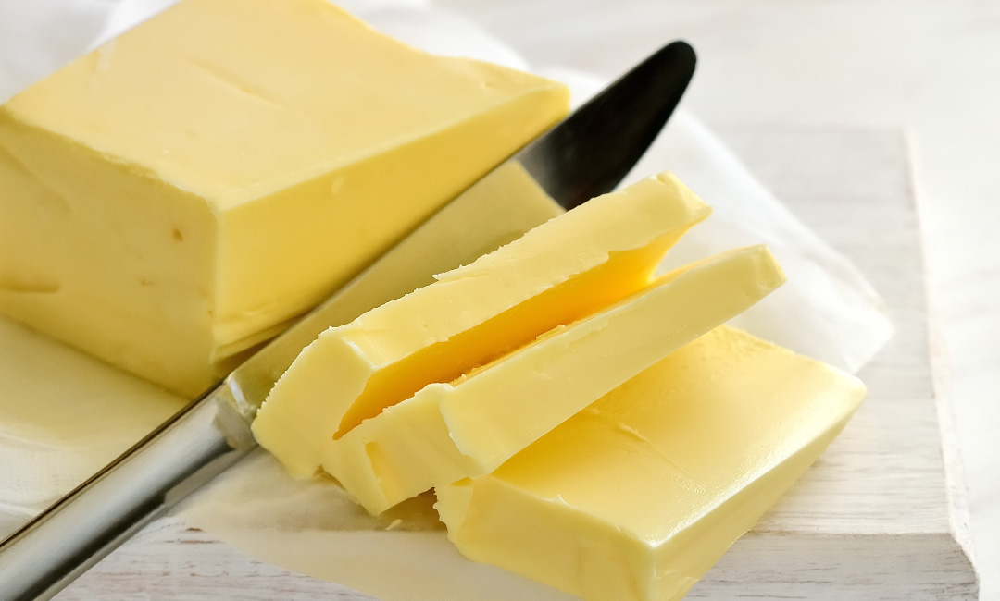

Χρυσές Συνταγές - Γρήγορες και Εύκολες Συνταγές Μαγειρικής
 ΧΡΥΣΕΣ ΣΥΝΤΑΓΕΣ Φαγητα Γλυκα Σαλατες Ορεκτικα Ξεχωριστα Νηστισιμα Connect with usΧρυσές Συνταγές
ΧΡΥΣΕΣ ΣΥΝΤΑΓΕΣ Φαγητα Γλυκα Σαλατες Ορεκτικα Ξεχωριστα ΝηστισιμαΣυνταγες
Συνταγές 1 δευτερόλεπτο agoΜία νόστιμη τούρτα πορτοκάλι που θα την αγαπήσεις
Συνταγές 1 ώρα agoΕξαιρετικό κέικ βραστό κατσαρόλας
Συνταγές 2 ώρες agoΠολύ ωραίο και αγαπημένο ρυζόγαλο εύκολο και νόστιμο
Συνταγές 3 ώρες agoΤέλεια σπανακοτυρόπιτα με χειροποίητο φύλλο που γίνεται απίθανη
Συνταγές 4 ώρες agoΈνα νόστιμο γαλακτομπούρεκο κόλαση
Γλυκα 4 ώρες agoΔεν θα ξέρεις ποιο γλυκό του κουταλιού να πρωτοφτιάξεις
More News
Συνταγές 5 ώρες agoΓλυκό του κουταλιού λεμόνι με ψίχα ένα θαυμάσιο γλυκό με μοναδικό άρωμα
Η Συνταγή είναι από την σελίδα με τις πιο νόστιμες συνταγές “Λένα Κορλού- ΟΙ ΧΡΥΣΟΧΕΡΕΣ […]
Γλυκα 5 ώρες agoΜία εύκολη συνταγή για απολαυστική πάστα σοκολάτας με κρέμα και μπισκότα πτι μπερ
Τι τέλεια και εύκολη δημιουργία για την πιο φανταστική πάστα σοκολάτας! Η συνταγή είναι από […]
Συνταγές 6 ώρες agoΠολύ ωραίο και νόστιμο τυρόψωμο στο φούρνο
Η Συνταγή είναι από την σελίδα με τις πιο νόστιμες συνταγές “Stalo Papaioannou ΟΙ […]
Συνταγές 7 ώρες agoΥπέροχα λαχταριστά ευωδιαστά μουστοκούλουρα ΧΩΡΙΣ ΖΑΧΑΡΗ για όσους νηστεύουν και όχι μόνο φυσικά
Η Συνταγή είναι από την σελίδα με τις πιο νόστιμες συνταγές “Instasuntages” . Υλικά (40 […]
Συνταγές 8 ώρες agoΩραίο ελαφρύ και γευστικό γλυκό με φρυγανιές
Η Συνταγή είναι από την σελίδα με τις πιο νόστιμες συνταγές “Tzeni Tsanaktsidou ΑΓΑΠΑΜΕ […]
Συνταγές 1 ημέρα agoΤέλεια συνταγή για φάβα με καραμελωμένα κρεμμύδια
Νόστιμη συνταγή μαγειρικής από “Μαγειρικές Ανησυχίες (George Chatzigiatroudakis)” ΥΛΙΚΑ 400 γρ. φάβα μουλιασμένη σε νερό […]
Μπισκοτα - Κουλουρια 1 ημέρα agoΠολύ ωραία συνταγή για κουλουράκια χωρίς αυγά , χωρίς βούτυρο
Λαχταριστά και σπιτικά κουλουράκια σε μία άλλη εκτέλεση! Η συνταγή είναι από το κανάλι Golfo […]
Συνταγές 1 ημέρα agoΠολύ ωραία νηστίσιμα τσουρέκια και του χρόνου !
Νόστιμη συνταγή μαγειρικής από “Maria Xatzhstamatioy- ΟΙ ΧΡΥΣΟΧΕΡΕΣ / ΗΔΕΣ” ΥΛΙΚΑ ΕΚΤΕΛΕΣΗ Διελυουμε 50 […]
Φαγητα 1 ημέρα agoΜια πολύ εύκολη και απλή συνταγή για πατάτες τσακιστές
Σίγουρα θα σας αρέσει ο συνδυασμός σε κάθε πιάτο με τις τσακιστές πατάτες. Όμορφο αρωματικό […]
Συνταγές 1 ημέρα agoΣούπερ συνταγή για αφράτους και αρωματικούς ρεβυθοκεφτέδες
Νόστιμη συνταγή μαγειρικής από “Μαγειρικές Ανησυχίες (George Chatzigiatroudakis)” ΥΛΙΚΑ ½ κιλό ρεβύθια μουλιασμένα 12 ώρες […]
Page 1 of 1274 1 2 3 4 5 Next › Last τελευταιες συνταγες δημοφιλης συνταγες Συνταγές 1 δευτερόλεπτο agoΜία νόστιμη τούρτα πορτοκάλι που θα την αγαπήσεις
Συνταγές 1 ώρα agoΕξαιρετικό κέικ βραστό κατσαρόλας
Συνταγές 2 ώρες agoΠολύ ωραίο και αγαπημένο ρυζόγαλο εύκολο και νόστιμο
Συνταγές 3 ώρες agoΤέλεια σπανακοτυρόπιτα με χειροποίητο φύλλο που γίνεται απίθανη
Συνταγές 4 ώρες agoΈνα νόστιμο γαλακτομπούρεκο κόλαση
Συνταγές 3 εβδομάδες agoΜοναδική κριτσανιστή Λαγάνα με σουσαμάκι!
Συνταγές 3 εβδομάδες agoΜοσχομυρίζει μέχρι εδώ Πολύ νόστιμο, αφράτο ρεβανί πορτοκαλιού
Συνταγές 4 εβδομάδες ago4.. 3.. 2.. 1.. πάμε για τον πιο σούπερ χαλβά με σιμιγδάλι
Συνταγές 4 εβδομάδες agoΓεμιστά που γίνονται μπουκιά και συχώριο Πεντανόστιμα
Συνταγές 4 εβδομάδες agoΚαι νηστίσιμος και φανταστικός χαλβάς Φαρσάλων ή αλλιώς ο χαλβάς των πανηγυριών!
Αρχικη Διαφήμιση Καταχώρηση Συνταγής Πολιτική Χρήσης Όροι Χρήσης -Συμμόρφωση GDPR ΕπικοινωνίαCopyright © 2021 xrysessyntages.gr All Rights Reserved